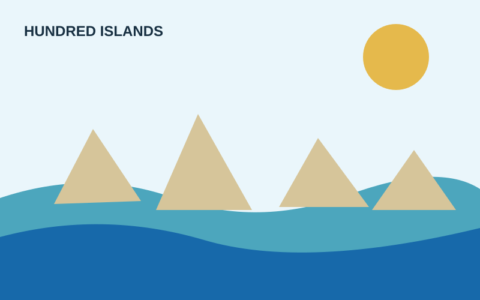
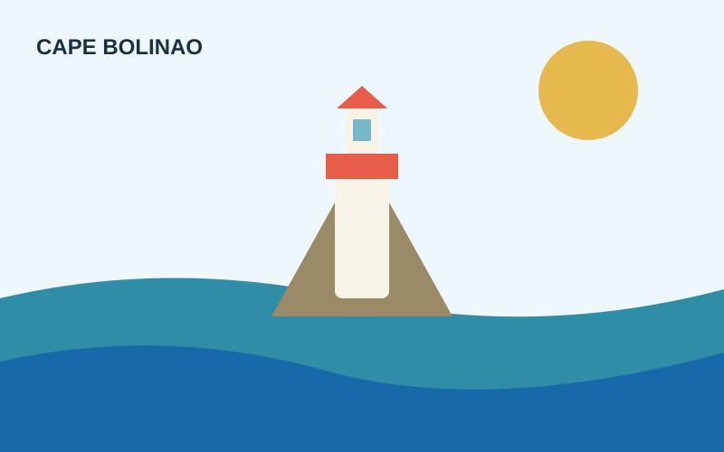
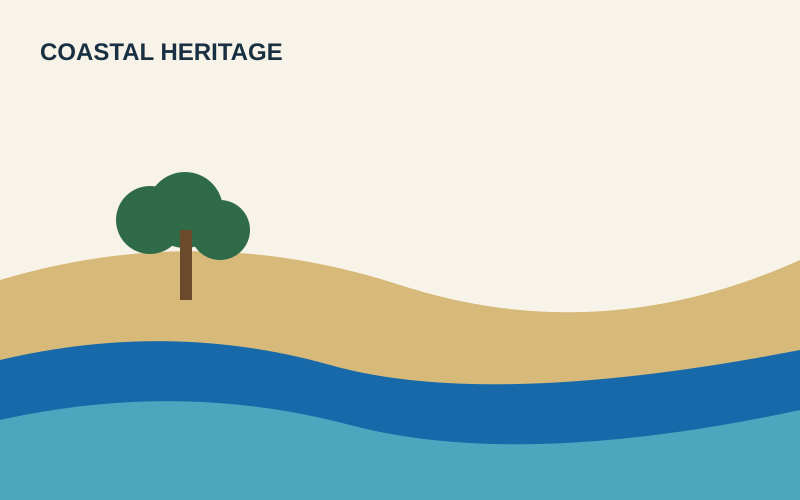

NATURAL HERITAGE
Alaminos' Hundred Islands
Alaminos City, Pangasinan
A landmark island cluster known for limestone formations and coastal tourism.
Explore site →Pangasinan Heritage Digital Showcase • Activity 1.1
SectionHeading → Featured heritage sites
Blue #1769AAGold #E5B94CInk #183042

A landmark island cluster known for limestone formations and coastal tourism.
Explore site →
A historic coastal landmark representing Pangasinan's maritime character.
Explore site →
A curated showcase of local stories and responsible tourism practices.
Explore site →A mobile-first, lightweight showcase designed for visitors with limited data.